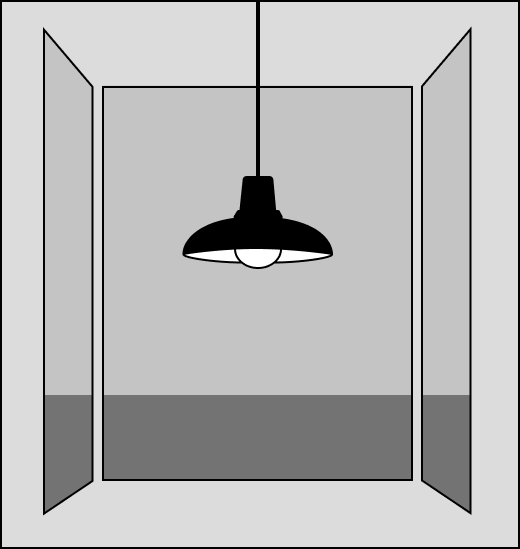

SCENE 3
Untitled
You wake up and feel a suffocating weight on your chest, keeping you locked down to your bed. You lay there for a while, waiting for it to lift. It does, every so slightly, just enough for you to get up
You rub your eyes and glance out the window to your right. The grey skies are filled with angry storm clouds.
"Hey, what's the weather like today?" You ask your apartment's virtual assistant
"You can expect a sunny day with a high of 82 degrees and a low of 65! Have a great day, Alex!"
The scene outside makes it clear that the weather report is unlikely to be true. It's never been reliable anyway. But it doesn't matter: You have to leave the house at some point. You pull yourself out from the layers of blankets and pillows you were hiding under and sigh.
A glance around reveals almost nothing. Just a couch, a lamp, a table, some basic cutlery and kitchen items... You still only have a minifridge, even though your studio apartment was supposed to come with a full fridge.
You pace over to the kitchen and get your morning brew started. The coffee maker, once sitting pathetically, lifelessly on the ground, in the corner of the room, whistles to life. It's one of the only luxuries you own.
The sky continues to darken as you stare outside, waiting on your coffee.
Normally, your coffee would be accompanied with a nice novel and Tony Cat curled up in your lap. Unfortunately, your alarm signals an end to any relaxation you wanted to have this morning.
You throw on some clothes, grab your bag, and rush out the door with your skateboard.
As you step out of the apartment building, you notice the air smells odd. It's heavy and earthy. Some might call it pleasant, but it feels stifling to you.
You try to ignore it, getting ready to hop on your board, but you remember how bad the rain was the other day. All morning, you've seen signs that make you suspicious of the weather report. You just know you should go back and grab an umbrella, even if it means you'll be late for work.
GO BACK INSIDE FOR AN UMBRELLA
SKATE OFF TO WORK